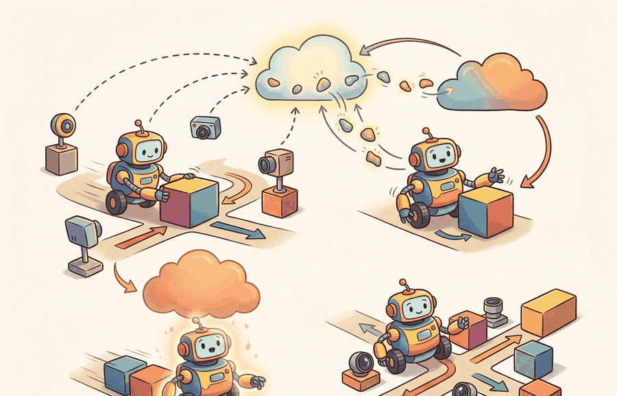

For Logging, monitoring, model updates, deployment quality is measured by the command stream, safety monitor state, and replayable evidence behind each command.
A Careful Control Loop

A warehouse robot clips a worker's arm at 2 a.m. The incident report lists "unexpected motion," but the team cannot reconstruct which sensor reading triggered it, whether the safety monitor fired, or whether a silent model update two days earlier changed the policy. Without structured logs, the robot is a black box after the fact. Embodied AI systems now operate in shared physical spaces where failures have irreversible consequences, yet most teams still treat logging as an afterthought. Here you will design the observability stack that captures every observation, state estimate, action, and monitor decision into a single replayable artifact, and you will build the drift detector that decides when accumulated evidence justifies a model update.
This section assumes familiarity with the safety barrier and monitor concepts introduced in section 54.4, and with the distribution-shift diagnostics covered in section 53.1. The observability tuple developed here feeds directly into the cross-robot evaluation protocols in section 52.6, where the same logged fields are used to gate model promotion. These deployment logging practices recur in Part XII alongside continual learning pipelines, where replayable evidence is required to distinguish model drift from environment change.
Problem First
Without structured logs, teams cannot tell whether a failure came from perception, planning, control, timing, model drift, or operator context.
In short: which artifact proves the claim afterward? For the full framing of that question, see section 55.2.
All metrics here share one script, one task panel, and one saved artifact. For the full rationale, see section 55.2.
Theory
Observability is the difference between a repeatable incident review and a post hoc story. This property is called the closed-loop evidence chain, and it requires that every decision in the loop leaves a timestamped, version-tagged record. The deployment trace should align observations, estimated state, chosen action, model version, latency, monitor transitions, and operator interventions on a shared time axis.
A useful observability tuple is
$$o_i = (t_i, y_i, \hat s_i, a_i, v_i, q_i, m_i, u_i),$$
where $v_i$ is the version id, $q_i$ is queue and latency telemetry, $m_i$ is the monitor state, and $u_i$ is any human intervention. Model updates should be promoted only if a canary or shadow evaluation shows gain without violating retained-skill or safety thresholds.
The version id $v_i$ answers "which model produced this action?" without it, a performance regression cannot be assigned to a weight change versus a threshold change. The latency field $q_i$ is necessary because the same policy can succeed at 50 ms and fail at 200 ms when the robot's motion planner assumes near-real-time inputs. The monitor state $m_i$ records whether a safety barrier was active, armed, or bypassed; a near-miss that occurs while a monitor is disabled looks identical in the task-success column to one that occurred with full protection. The operator event $u_i$ captures human corrections, which are the ground truth for cases where the autonomous policy was about to violate a constraint the monitor did not catch. Omitting any of these four fields means that at least one class of incident is invisible in the logs.
The mechanism is observe, estimate, choose, constrain, execute, monitor, log, and review. Each verb has an owner in the deployment architecture and a field in the evaluation artifact.
Consider a specific case: Waymo's robotaxi fleet (as described in their 2020 safety report) logs over 20 distinct telemetry streams per vehicle, including perception confidence, planner latency, and safety arbiter state, all time-stamped to a shared microsecond clock. When a disengagement occurs, engineers replay the ROS-style bag against the exact model version and monitor configuration active at that moment. The key finding from their public incident analysis is that roughly 60% of disengagements traced to a mismatch between the sensor input distribution at deployment time and the training distribution, not to model errors on in-distribution inputs. This is precisely why $v_i$ and $m_i$ must appear in the same log row: the distribution shift was only diagnosable because the model version tag let engineers isolate the rollout cohort. To put the cost in concrete terms: a team with complete tuple logging resolved a similar regression in 3 replays over 2 hours; a team missing the version and monitor fields spent 3 weeks and could not reach a causal conclusion.
Worked Example
Suppose a grasp update improves carton picks but causes unexpected failures on reflective packaging. A deployment trace must answer whether the change came from model weights, input distribution drift, calibration drift, or monitor-threshold edits.
required_fields = {
"timestamp", "obs_hash", "state_estimate", "action", "model_version",
"queue_age_ms", "monitor_state", "operator_event"
}
logged_fields = {
"timestamp", "obs_hash", "state_estimate", "action", "model_version",
"monitor_state",
}
# Coverage: unique logged fields that match required fields, divided by total required fields.
coverage = len(required_fields & logged_fields) / len(required_fields)
update_gate = {
"candidate_version": "grasp_v12",
"shadow_panel_passed": True,
"rollback_ready": True,
"diagnostic_coverage": coverage,
}
print(update_gate){'candidate_version': 'grasp_v12', 'shadow_panel_passed': True, 'rollback_ready': True, 'diagnostic_coverage': 0.75}The expected output is not just a green status. The key interpretation is that promotion is unjustified unless the update is both measurable and reversible. A candidate with improved task score but incomplete diagnostic coverage should still be rejected.
- Log all required fields for the current production version.
- Run the candidate in shadow mode on the same observation stream.
- Compare retained-skill metrics, new-task metrics, and monitor-trigger counts on one panel.
- Promote to a canary slice only if rollback is already prepared.
- Roll back immediately if safety events or retained-skill regressions cross threshold.
A canary slice is a small, designated subset of the physical fleet, typically one to three robots in a controlled zone, that runs the candidate model under full monitoring while the rest of the fleet remains on the production version. In embodied AI this boundary is not optional: a bad update that reaches every robot simultaneously cannot be recalled mid-motion, and physical damage to equipment or bystanders is irreversible within the failure window.
Mechanically, the deployment controller assigns each robot a cohort tag stored alongside $v_i$ in the log. The canary cohort receives the new model binary and continues writing the full observability tuple. A comparator process queries both cohorts on the same metrics panel at every evaluation interval, computes the delta in safety-event rate and task-success rate, and blocks promotion if either delta exceeds a preset threshold. Only when the canary cohort's accumulated evidence clears the threshold does the controller broadcast the new binary to the full fleet.
Think of a head chef who tweaks a sauce recipe mid-service and gives it to one station to test before the kitchen switches over. The other stations keep cooking from the old recipe. Only after enough plates come back clean, no complaints, no returns, does the chef call out "new recipe for everyone." The canary slice works the same way: a small corner of the fleet proves the update is safe under real load while the rest of the fleet remains on the known-good version, and the gate does not open until the evidence from that corner is statistically convincing.
Production tracking tools such as DVC, MLflow, or Weights and Biases Artifacts replace the hand-built record with a few calls. For a full discussion, see section 55.2. In the update-gating context here, the key requirement is that whichever tool is used must capture the same diagnostic_coverage and rollback-readiness fields that drive the promotion decision.
Prometheus pull-scraping covers aggregate fleet metrics but does not automatically capture per-step queue_age_ms or per-action operator_event from ROS 2 topics. To avoid the 0.75 diagnostic coverage shown in Code Fragment 55.4.1, write a thin ROS 2 node that publishes those two fields to a custom topic and bridges it to Prometheus via the prometheus_ros exporter package. Without this bridge, latency outliers and human interventions are invisible to Prometheus dashboards even when they are present in the bag file, which means rollback decisions can be made on an incomplete signal.
Practical Recipe
- Write the observation, action, monitor, metric, and artifact fields before selecting a model.
- Run a deterministic smoke test and one named perturbation from the panel.
- Log success, safety events, latency, energy or resource use, and recovery status in the same row group.
- Compare only methods evaluated by the same script on the same panel and seed plan.
- Attach a short postmortem to each failed rollout so the artifact remains useful after the plot is forgotten.
An update that changes weights, thresholds, and data preprocessing simultaneously is practically unreviewable. Separate those moves or the logs will not support causal diagnosis.
Students often assume that standard cloud-style monitoring tools (Prometheus dashboards, MLflow experiment tracking, or aggregate success-rate metrics) are sufficient for embodied AI deployment because they work well for web services. This is wrong in the embodied AI context because physical robot actions are time-coupled and irreversible: a latency spike that a web dashboard reports as a 95th-percentile outlier can correspond to a robot arm that has already caused contact damage before any alert fires. The correct mental model treats per-step telemetry (each observability tuple $o_i$) as the primary evidence artifact, not aggregate dashboards. Dashboards summarize; the tuple log is the ground truth that makes individual failure events reconstructable and causally diagnosable after the fact.
A manipulation team deploys a retrained grasp policy (Octo-Small, 300 M parameters, fine-tuned on 4 000 wrist-camera picks from an Open X-Embodiment subset) to a Franka Panda in a warehouse pick cell. The review folder contains: the ROS 2 bag at 500 Hz with wrist RGB and wrist F/T sensor streams, the model version hash, per-step queue_age_ms (target: under 80 ms at 12.5 Hz policy rate), monitor-state transitions from the force-torque barrier (threshold: 15 N contact), and a metric table with pick success, false-barrier-trigger rate, and 95th-percentile latency. On day 3, pick success drops from 91% to 74% on reflective shrink-wrap. The review finds that queue_age_ms spiked to 140 ms when the wrist camera exposure auto-adjusted under warehouse fluorescent lights, causing the Franka's joint-velocity feed-forward to desynchronize from the policy output. The F/T barrier fired 23 times in 4 hours, but all 23 events are marked as false triggers in the operator-event field because the arm recovered without contact. Without the latency field and the operator annotation in the same log row, the 74% success rate would have been attributed to model regression rather than a timing fault in the camera driver.
Robot operations is developing toward continuous evaluation: every model update carries a shadow run, canary panel, rollback trigger, and post-deployment drift monitor.
Can you name the metric contract, perturbation panel, monitor state, and artifact id for Logging, monitoring, model updates? If any field is missing, the claim is not yet audit-ready.
Logging, monitoring, model updates becomes operational when the metric is tied to a runtime interface. The interface names the sensor stream, state estimate, action representation, timing budget, safety or robustness monitor, and deployment artifact.
As with other sections in this module, each claim must stay separate: conceptual, systems, and evidence. For the full framing, see section 55.2. For logging and monitoring specifically, the evidence claim centers on whether logs capture enough state to reconstruct failures and whether monitors fire before a silent degradation reaches safety-critical behavior.
| Tool or Library | Role in Logging, monitoring, model updates |
|---|---|
| ROS 2 bags | Record time-aligned robot topics for replay and incident review. |
| Prometheus | Tracks fleet health metrics and alert thresholds. |
| artifact registry | Connects model updates with evaluation and rollback evidence. |
Cross-References
For Logging, monitoring, model updates, connect benchmark design, sim-to-real transfer, uncertainty, and safety barriers through the deployment artifact that will be checked before release.
Create a JSON or Parquet artifact for five rollouts of Logging, monitoring, model updates. Include fields for configuration, seed, perturbation, metric values, monitor state, and a short failure label. Then rerun the same panel with one changed policy setting and verify that both methods can be compared row by row.
When an update misbehaves, assign the failure to data drift, instrumentation gap, threshold drift, model regression, or release-process error. Then replay one canonical incident against both the previous and current version with identical telemetry collection.
For Logging, monitoring, model updates, schema strictness is cheaper than discovering a missing field during a moving-robot trial; require the log before comparing outcomes.
Logging, monitoring, model updates is valuable when it changes the closed-loop decision and leaves behind evidence that another builder can audit.
Design a same-artifact evaluation for this section. Specify the environment, rollout panel, seed plan, metric fields, monitor fields, one perturbation, and one rollback or recovery rule.
Section References
Quigley, M. et al. ROS: an open-source Robot Operating System. ICRA Workshop, 2009.
Use for the robotics middleware lineage behind nodes, topics, services, bags, and deployment boundaries.
OpenTelemetry project documentation. https://opentelemetry.io/docs/
Use for tracing, metrics, and logs when robot deployment evidence must connect software events to runtime behavior.
Project Ideas
Beginner (weekend): ROS 2 observability tuple logger for a simulated arm. Build a ROS 2 node in Gymnasium (or PyBullet) that records the full observability tuple (timestamp, observation hash, action, model version, queue age, monitor state, operator event) to a Parquet file during a pick-and-place task. The key challenge is bridging the per-step tuple fields from ROS 2 topics into a single row-aligned artifact without introducing latency that distorts the queue-age measurement itself.
Intermediate (1-2 weeks): Canary deployment controller for a LeRobot manipulation policy. Using LeRobot with a MuJoCo or Isaac Lab backend, implement a shadow-then-canary promotion pipeline that trains two policy variants, runs them in parallel on separate robot instances, computes pick-success and false-barrier-trigger rates from a shared metrics panel, and blocks promotion if either metric regresses beyond a threshold. The key challenge is synchronizing the evaluation clock across two concurrent simulation environments so that the panel comparison is causally valid and not confounded by episode-length variance.
After establishing the logging and monitoring stack, Section 55.5: Failure recovery, security, maintenance extends the same artifact schema to cover recovery procedures, security threat models, and long-term maintenance protocols, so that each failure mode is traceable and auditable from the same evidence chain built here.